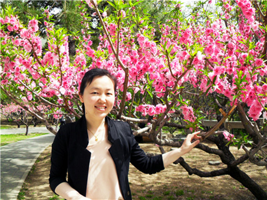

金善女 行走在翻译的云端
来源：中华儿女报刊社

秋日的午后，中国民族语文翻译局大院。
金善女，翻译局朝鲜语文室翻译一科科长、副审译，微笑着招呼着轻盈走来，简洁利落的亮橘色套装、黑色西服裙，一下子就让身边人温暖和愉悦起来。三五本厚薄不一的书，是她撰写的论文和译作，被视若珍宝地捧在怀中。
这个自幼喜欢学语文，立志当一名翻译的朝鲜族女孩儿，硕士研究生毕业之后为自己的梦想找到了最合适的实现路径。“工作对于我，是幸福的第一要素。我一直庆幸自己能够成为一名翻译工作者，我喜欢文字在我手下循环于彼此语境里的那种飞翔状态。”金善女明快爽利地说着，脸上洋溢着微笑，宛如一缕美好的清风。
学翻译，从“传递”到“传达”
金善女是带着职业憧憬走进翻译局的。当一名翻译，是她从小的美丽心愿。
进入朝文室后，金善女完成的第一篇笔译文稿，就被科室教授打印出来拿给各位领导。“看，新来的小姑娘水平很高呢！”至今记得领导脸上欣喜表情的金善女，当时感觉翻译并不难。她笑着回忆当时的想法，脸上竟然带着几分愧疚：“刚开始工作时，我觉得我的工作就是单纯的翻译，甚至认为我们单位就是语言服务部门。”
不过，没多久金善女就彻底改变了自己的想法。她所在的朝文室是中国民族语文翻译局最早设置的部门之一，多年来形成的严谨作风，时任朝文室主任、现为翻译局副局长的金英镐和时任朝文室副主任安贤浩等前辈的言传身教，让金善女对这份工作的意义有了深刻认知。“我慢慢认识到，我们拥有的不仅是作为党和国家重要文件、政策、精神传播者的荣誉感，在越来越多的重要事件翻译工作参与过程中，我更从心里生发出为国家、民族、人民未来发展作出贡献的责任感。”
因为翻译出色，2010年，刚入职两年不到的金善女便作为全国两会民族语文翻译组成员，走进人民大会堂四层同声传译室。她之前用了大概两个月的业余时间学习研读近五年的全国两会翻译文件，还多次进行翻译模拟。“我第一场同声传译是全国政协会议开幕式，打开同传话筒的瞬间，我好像一下子进入另一种状态，很快忘记自己是一个新人，全身心投入其中。”现在回想起来，金善女还会激动地涨红脸，语速很快地讲出难忘细节。“我记得当年正好是国际金融危机第二年，国家制定一些相应政策，李克强总理在政府工作报告中讲道：‘一个为民服务的政府，就应该时刻倾听群众的呼声，应该知道群众在想什么、有什么困难。’这段话我至今记忆犹新。”
金善女还记得，当她把自己第一次作为责任编辑翻译、统筹的《民族画报》清样交给前辈金英镐审定时，金英镐带着她来到会议室，坐下来每篇文章、逐字逐句为她讲解翻译技巧和注意事项，连标点符号都细细点评修改。“那次金主任整整审评了三天，从早上到单位坐在那里直到晚上下班。清样上的每一句话都讲到了。”这次让金善女备受震动的指教，使她重新理解自己的职业，并开始向更高的标准孜孜以求。“我当时业余时间全都用来练习翻译文件了，因此前辈们都夸我进步很快。”
一个又一个“第一次”伴随业务上的精进接踵而至。金善女从不断完成的挑战中悟出“翻译”的真谛——不仅是字句语意的传递，还有不同文化的传达。
而今，金善女成为连续5年参与全国两会文件翻译的骨干，在履历上书写出一连串的精彩。她先后参加2010、2013、2014年全国两会和党的十八大的同传工作。完成了《政府工作报告》、《全国人大常委会工作报告》、《全国政协常委会工作报告》、《发改委工作报告》、《最高人民法院工作报告》、《最高人民检察院工作报告》等重要文件的翻译、审稿、汉核、校对、改版等工作。2015年，全国两会文件翻译定稿组里，也已经出现这个年轻的身影。但金善女依旧谦虚：“前辈给予了许多及时的指点与支持，另一方面领导大胆给我机会，大家没有把我当新人，这让我融入很快。”
爱翻译，孜孜不倦的圆梦之旅
清早五点，晨光熹微抑或天色未明，金善女准时起床，洗漱后在窗外啾啾鹊鸣中打开电脑，上网看朝鲜语新闻并进行至少20分钟笔译，而后整理新单词，做好资料储备。这件事金善女已坚持十多年，一天中最好的时光，她奉献给业务学习。“单词更新很快的，如果不进步就会落后。而且朝文翻译还面对一个特殊的问题，就是中国朝鲜族与朝鲜的朝鲜语在语言应用、习惯表达方面还是有所区别，这使得翻译起来多了一道繁琐的比较、润色程序，因此更要多听多了解。在很多人的帮助下，现在我越来越热爱这份工作不断被延伸出的对我的意义。”
“70后”金善女出生于吉林省梅河口市，这座东北小城里生活着十余个民族，少数民族占人口比例超过十分之一。她在朝鲜族聚居区长大，进入朝鲜族学校读书，一边学习本民族语言文字、一边吸纳汉语文的知识与美。家中长辈对于朝鲜族习俗文化的尊崇与沿袭，金善女也一一看在眼里，自然而然地感受到朝鲜族文化是中华民族文化的重要组成部分。
从少年到青年，文学一直是金善女的钟爱。她还记得小时候，每当母亲下班回到家，从包里拿出《中国少年报》《少年儿童》等读物递过来时，自己心中不变的雀跃。任凭碗筷摆好、饭菜飘香，这个平日里的乖孩子也要站在餐桌旁“任性”地一口气读完新报刊再吃饭。初中时，一次《延边文学》杂志社在吉林通化举办讲座，金善女被母亲带到会场，这是她第一次现场听朝鲜族作家讲述散文与诗，“第一次感觉到日常生活语言之外，朝鲜族语言的优美与丰富”。
毫无悬念地，金善女高中毕业后考入中央民族大学朝鲜语言文学系。四年本科学习生活，全班13人加上老师都是朝鲜族，“文化习俗都一样，甚至审美眼光也差不多，对民俗方面的了解很有帮助。”回忆很美，金善女爽朗地笑起来。
在大学里，金善女是个“学霸式”人物，成绩没有出过前三名。韩国学者、政要到学校参观、交流时，她被委任为随行翻译。大学三年级时，中央人民广播电台朝鲜语部经济报道领导到中央民族大学招聘实习生，正好处在实习期的金善女，在老师推荐下得到这次宝贵机会。“这段经历是我第一次用自己学到的知识为大众服务，把许多信息通过广播形式传递给朝鲜族人民，让我体会到知识的价值。”在电台实习期间，金善女第一次远离家人，在北京过春节。“部里的老师很好，把我叫到家里过了一个朝鲜族的春节，跟在家里一样。”
考入北大读硕士是金善女在人民广播电台实习时就有过的考虑。虽然本科毕业后，成绩优异的她顺利找到一份在文化单位担任翻译的工作，收入也不错，但她还是选择了考研，如愿成为北京大学外国语学院著名朝鲜语教授金景一的学生。除了专业课之外，金景一教授对于朝鲜族文化在我国民族文化之林中的发展、传承也非常重视，并经常“强调要站在国家角度看待民族文化，这对我影响很大”。读研究生时，金善女曾在韩国做过半年交流学生，这期间她旁听了大量同声传译课，甚至达到着迷的程度。
扎实的朝鲜文语言文化基础、不同岗位的翻译工作历练和对翻译的热爱，都让金善女在硕士研究生毕业之际，最终决定加入中国民族语文翻译局，成为朝文室的一名年轻人。“当时一些政府外事部门、与韩国或朝鲜族有关的企事业单位，甚至韩国企业也抛来橄榄枝，但我还是选择翻译局。这里符合我的理想，就是做一个有社会价值的传播者。不过，我和翻译局其实还有另一层缘分——这里是我的导师金景一曾经工作过的地方，我从心里感到亲切。”
当翻译，架起民族文化交流桥梁
光阴如水，带走年华。从初出茅庐到日渐精湛，这个当初稚气未脱紧张地走进人民大会堂四层同声传译室，第一次按下按键开始工作的年轻人，已经成长为朝鲜文室一名青年骨干。又是早春三月，金善女再次走进熟悉的同传室，身后跟着如她当年一般怯生生的新同事。
多练习、多请教、多回顾，是金善女为自己成长进行的总结，也是她与新同事分享时常说的话。“‘练习’是熟练工作的前提，多站在巨人的肩膀上看，能够看得更远；‘请教’是工作提升的有效手段和关键方法，前辈老师历经磨练，他们的惊讶和方法能够让我们少走弯路；‘回顾’是对自我的一种认知，每次一项任务完成后我都会做自我总结，这样能在下次工作前做更充足的准备。”
2015年“9•3”阅兵，是全民族的盛会。金善女也用自己的方式，参与到这场意义非凡的活动中。作为民族语文翻译组朝文组组长，她和同事们提前十几天临时接到任务，到郊区封闭工作。“那段时间我们切断与外界一切联系，专心致志准备阅兵式上的翻译工作。因为有些文件是绝密的，所以我们直到阅兵式当天早上才拿到稿件，还要抓紧定稿，真是争分夺秒。而且习主席的讲话每个字都在向世界表明一种思想和态度，不能错之毫厘，因此我们每一段都要从上到下反复推敲才能审定。”
“一种文化就是一片浩瀚海洋，作为一个代表民族语言翻译最高水准的国家级单位，我们当然不能仅局限于文件会议的工作，语言文化的学术研究也是我们一个重要根本。”由于在中央民族大学、北京大学的学习经历，金善女积累了许多宝贵资源和经验。她也从未放弃朝鲜民族文化研究工作，也庆幸自己可以经常从事这方面的研讨工作。“我们朝鲜语翻译界每年有一次专家会议，这是我们交流业务的宝贵机会，很多新词的译法都会在这次会上进行交流。局里也给我创造很多条件和机会。营造积极向上的业务氛围是我们朝文室的业务传统。”金善女用三个词概括了部门的状态——“传帮带”、“一丝不苟”、“公平公正”。
金善女常说，民族语文翻译局大师如云，自己还是一个晚辈，尚在努力学习，如果能多一些政治理论的系统学习机会和深入基层少数民族的机会就更好了。“
从语言翻译到文化交流，金善女不断努力着。工作之余，她还进行文学作品的翻译工作。看着不同文化在自己纸端笔下融汇互通，金善女享受着热爱带来的喜悦感。
“我已经把自己人生的全部意义定为在翻译事业中有所作为。一个人只有将事业与生命融合，才能真正实现自己的价值，这已成为我的一种生活方式。由此我也才心甘情愿在业余时间尝试探索各种不同的翻译专业技能，让不同语言在我笔下相互转换，仿佛从一个世界通往另一个世界，而后大同、美美与共。很有意思，也很有意义。”金善女依旧带着盈盈笑意，道出自己的梦想。
采访结束，依然笑如春风的翻译工作者金善女和来时一般轻盈而去，神有所思。民族语文翻译，是我们国家民族大团结极其重要的纽带工作，正是有金善女这样藏在云后，为祖国默默添彩的许多幕后翻译工作者的敬业奉献，才能够让中国梦在神州大地上飞翔的更高、更广。（记者/华南）